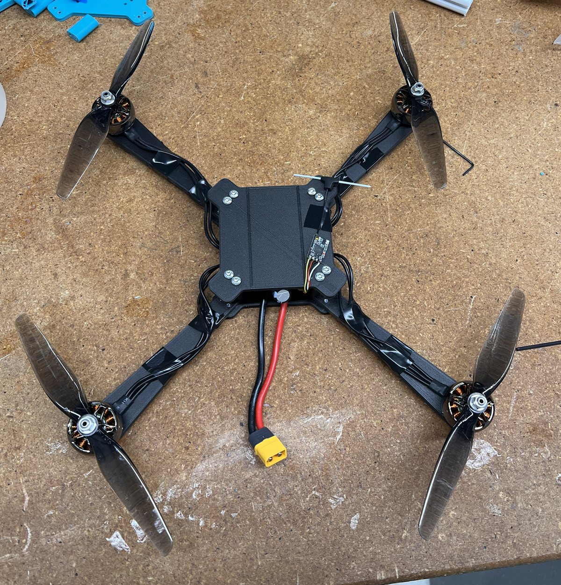
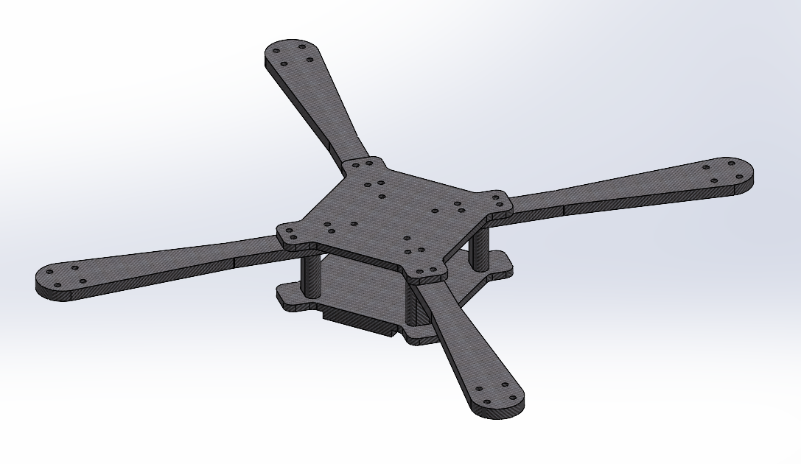

Oct 2025 – Present · Personal Project
Custom FPV Quadcopter
An FPV quadcopter I designed, assembled, and configured from individual components, then debugged until it flew stably.
- Role
- Designer & Builder
- Focus
- Propulsion, electronics integration, flight tuning
- Tools & Hardware
- SolidWorks, CF-PLA printing, Betaflight, ExpressLRS
How it works
- Power: a LiPo battery feeds a 4-in-1 BLHeli32 electronic speed controller (ESC), which distributes power to all four brushless motors.
- Control: the flight controller takes throttle and stick commands and continuously adjusts each motor’s speed to control roll, pitch, yaw, and total thrust. The ESC turns those commands into commutation for each three-phase motor.
- Radio link: a BetaFPV Nano ExpressLRS receiver and LiteRadio 2 SE transmitter give a low-latency link between pilot and aircraft.
What I built
- Propulsion: sized four ECO II 2807 1300KV brushless motors and 7 × 4.5 in propellers to the aircraft’s thrust needs. The 2807 motors have the torque to swing large props efficiently. I chose 1600–2200 mAh LiPo batteries to balance flight time against added weight.
- Frame: modeled the frame geometry in SolidWorks and 3D printed the parts in carbon-fiber-reinforced PLA.
- Frame loads: at full thrust, each motor puts a bending load on its arm on top of vibration, maneuvering, and landing loads. I modeled each arm as a cantilever with a point load at the motor, Mroot = Fmotor · Larm, as a basis for checking stiffness, bending stress, and factor of safety.
- Electronics: assembled and wired the full electrical system: battery, ESC, motors, flight controller, and receiver.
- Flight configuration: set up and tuned the flight controller in Betaflight after assembly, then worked through the problems that came up in early testing: arming behavior, AirMode configuration, and an unstable hover.
- Troubleshooting: rather than treating each problem as a software bug, I traced it through the whole system, from transmitter inputs and the receiver link to controller settings, ESC output, motor direction, and how the aircraft actually responded.
What I learned
- Hands-on experience: brushless propulsion, power electronics, embedded flight control, radio communication, mechanical integration, and system-level troubleshooting.
- A drone is one electromechanical system. Motor choice set the structural loads, battery choice traded power against mass, and small configuration errors could substantially change how it flew.
- Where I want to work: the project strengthened my interest in engineering at the intersection of mechanical hardware, robotics, and autonomous systems, where good mechanical design depends on understanding the electronics and controls around it.
Next steps
- Thermal search: integrating a thermal camera so the quadcopter can support search and rescue operations.

